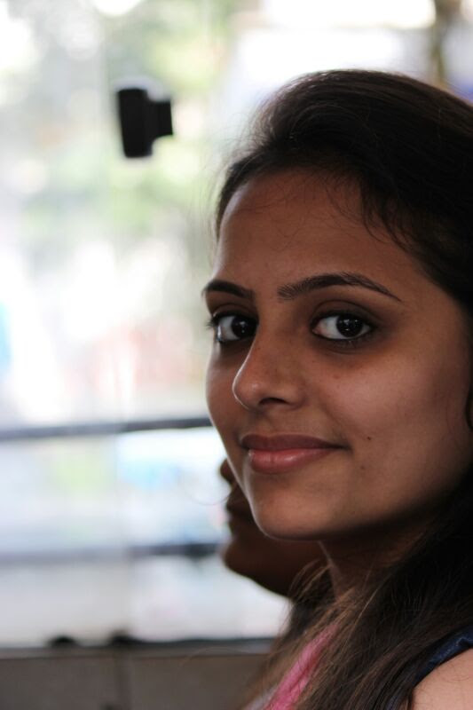

The passion to look under the hood of an application/ website is what has shaped me to become a web developer.
Having a technical background and a passion for art, it was only natural for me to be attracted to coding. Coding brings both of my interests together in perfect harmony. The design and aesthetic aspect of web design allows me to showcase my creative side and unleash my inner artist.
Taking a step back, the tech culture is also very appealing to me. Reason being, the tech community is responsible for shaping today’s world in such a huge way. I would love nothing more than to contribute to this progressive community and impact the world in a positive manner.
Resume
The feeling of solving challenges by coding is unmatched. I gain instant satisfaction whenever I am able to overcome obstacles and am able to find solutions.
All in all, my curiosity for technology and passion for design has brought me to the world of coding. I feel that honing this skill will open up endless opportunities for me.